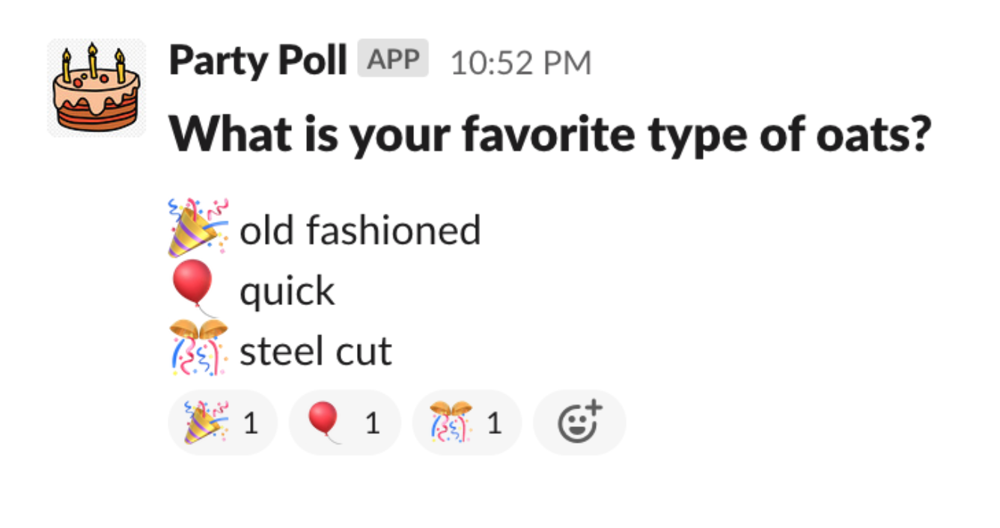
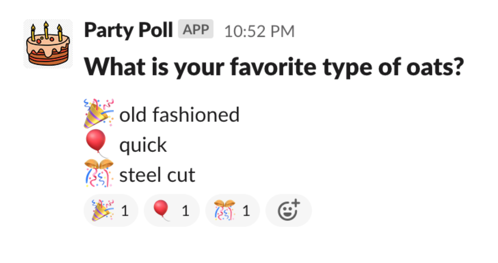

Have you ever needed to take a poll in Slack?
There are other polling apps out there but you'll need üí∞ for them
Have you created an emoji poll as described on the slack docs?
Pretty straightforward but annoying to manually type in all the emoji options.
Party Poll is a free slack app that allows users to create reaction based polls with a slash command
Upon entering the command, Party Poll will cast one vote to each option to allow users to easily select an emoji to vote
Party Poll gets the party started üéâ
Created with ❤ by Adriel Klein. Please contact for questions or comments.
Please also see our Terms of service and Privacy policy.